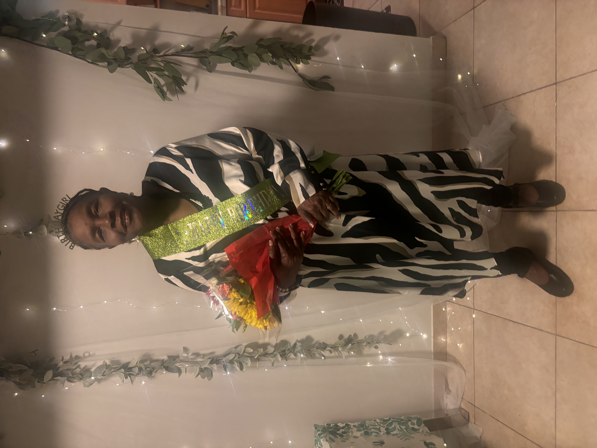

Anne-Marie
Our Foundation

Wisdom, love, and strength in human form.
Gallery
My 17th birthday party — a moment with my grandma, me, and her brother. Family, love, and memories all in one frame.
A quiet afternoon at home — simple, comfortable, and filled with warmth.
Our trip to Paris — my siblings, my grandma, and a moment that felt as special as the place itself.

My grandma with her daughter — a bond built on love, strength, and years of care.
Me and my grandma at Oldine’s son’s birthday — laughter, love, and being exactly where we’re meant to be.
An afternoon in Miami — sunshine, smiles, and moments that feel easy and full.